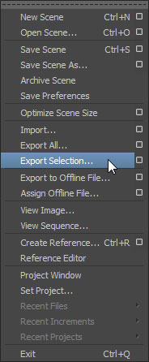
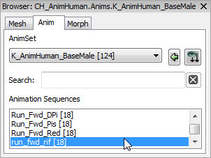

UDN
Search public documentation:
FBXAnimationPipeline
日本語訳
中国翻译
한국어
Interested in the Unreal Engine?
Visit the Unreal Technology site.
Looking for jobs and company info?
Check out the Epic games site.
Questions about support via UDN?
Contact the UDN Staff
中国翻译
한국어
Interested in the Unreal Engine?
Visit the Unreal Technology site.
Looking for jobs and company info?
Check out the Epic games site.
Questions about support via UDN?
Contact the UDN Staff
UE3 Home > FBX Content Pipeline > FBX Animation Pipeline
UE3 Home > Animation > FBX Animation Pipeline
UE3 Home > Animator > FBX Animation Pipeline
UE3 Home > Animation > FBX Animation Pipeline
UE3 Home > Animator > FBX Animation Pipeline
FBX Animation Pipeline
Overview
Naming
Creating Animations
Exporting Animations from 3D Apps
- Select the bones corresponding to the animation to be exported in the viewport.
- In the File menu choose Export Selected (or Export All if you want to export everything in the scene regardless of selection).

- Choose the location and name for the FBX file to export the animation to and click the
 button.
button.
- Set the appropriate options in the FBX Export dialog. For the purposes of exporting animations, you must enable the Animations checkbox.
- Click the button to create the FBX file containing the mesh(es).
- Select the joints to be exported in the viewport.
- In the File menu choose Export Selection (or Export All if you want to export everything in the scene regardless of selection).
 - Choose the location and name for the FBX file to export the animation to and set the appropriate options in the FBX Export dialog. For the purposes of exporting animations, you must enable the Animations checkbox.
- Click the button to create the FBX file containing the mesh(es).
Importing Animations
- Click the
 button in the Content Browser. Navigate to and select the FBX file you want to import in the file browser that opens. Note: you may want to select
button in the Content Browser. Navigate to and select the FBX file you want to import in the file browser that opens. Note: you may want to select  in the dropdown to filter out unwanted files.
in the dropdown to filter out unwanted files.

- Choose the appropriate settings in the Import dialog. Make sure that Import Animations is enabled. Note: The name of the imported mesh will follow the default Naming Rules. See the FBX Import Dialog section for complete details of all of the settings.
- Click the
 button to import the mesh and LODs. The resulting mesh, animation (AnimSet), material(s), and texture(s) will be displayed in the Content Browser if the process was successful. You can see the AnimSet that was created to hold the animation was named after the root bone of the skeleton by default.
button to import the mesh and LODs. The resulting mesh, animation (AnimSet), material(s), and texture(s) will be displayed in the Content Browser if the process was successful. You can see the AnimSet that was created to hold the animation was named after the root bone of the skeleton by default.
By viewing the imported mesh in the AnimSet Editor and selecting the newly created AnimSet in the Anim tab, you can play the imported animation sequence and see that it is working as expected.

- Open the AnimSet you wish to import the animation into by double-clicking it in the Content Browser or by double-clicking the skeletal mesh the AnimSet is associated with and then selecting the AnimSet in the Anim tab of the AnimSet Editor.
- In the File menu of the AnimSet Editor, select Import FBX Animation.
- Navigate to and select the FBX file containing the animation in the file browser. Note: You may need to set the file format to
 to see your file.
to see your file.
- A progress dialog displays while the animation is being imported. Once complete, the new animation sequence (named the same as the FBX file by default) will be dislayed in the Animation Sequences list of the Anim tab.
You can now play the imported animation sequence and see that it is working as expected.
Exporting Animations to FBX from Unreal Editor
- In the Content Browser, double-click (or right-click and choose Edit Using AnimSet Editor) the AnimSet asset that contains the animation sequence you want to export to open it in the AnimSet Editor.
- In the Anim tab, select the animation sequence you want to export.
 - In the File menu, choose Export FBX Animation.
- Choose a location and name for the file to export in the file browser that appears.
A dialog appears allowing you to export the current skeletal mesh along with the animation sequence.
Choose Yes to export the skeletal mesh; No to export just the animation sequence.
Resources
- ExampleSkeleton.fbx (Right-click > Save As...)